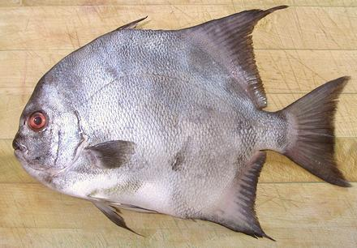

Spadefish

[Angelfish (in error); Chaetodipterus zonatus (Pacific) |
Chaetodipterus faber (Atlantic)]
The Pacific and Atlantic spadefish are difficult to tell apart, because both are so variable their characteristics overlap. I believe the photo specimen is Pacific, but am not certain. The Eastern Pacific is found from San Diego, California south to Peru, while the Atlantic is found in the Western Atlantic from Massachusetts, USA south through the Gulf of Mexico and on to the far south of Brazil. The Atlantic can grow to 36 inches and 20 pounds, while the Pacific can grow to 26 inches. The photo specimen was 13 inches and weighed 1 pound 13-1/4 ounces. The Atlantic is a minor commercial catch and some aquaculture. The Atlantic is IUCN listed NE (Not Evaluated) and the Pacific LC (Least Concern).
More on Varieties of Fish (very
large page).
|
The flesh of these fish is off-white, tender and mild, but with sufficient flavor to be interesting. There is a moderate amount of darker meat under the skin along the center. It is a little different in texture, but not significantly stronger in taste than the rest of the flesh. Fillets can take a light poaching, but not more severe wet cooking. I prefer it lightly dusted with rice flour, pan fried in a neutral oil, and eaten with my usual lemon juice, white wine and mild chili sauce. Buying: This fish appears very rarely in the Asian markets here in Los Angeles, and is likely mislabeled "Angelfish". It is a "buy it when you see it" sort of fish. The photo specimen was purchased from a Philippine market in Los Angles (Eagle Rock) for 2016 US $2.49 / pound. Scales: This fish is completely covered with small stiff scales with fairly good adhesion. They take a little energy to scrape off and fly around some. Cleaning While this is a deep bodied fish, it is built like a round bodied fish and is cleaned like one. Some stuff doesn't pull out easily until the gills are removed. They pull out fairly easily, but break up, and the aperture is small, so use your long nose pliers. Removing the head makes cleaning much easier, but If you want to cook this fish head-on, you have to do some digging. The head has a short bony projection at the top you need to avoid. Fillet: This fish is a little more difficult to fillet than many, because the fillet is so thin at the top and bottom, and there's a big bone at the back of the body cavity that gets in the way. When you cut forward to the body cavity, just cut the ribs from the backbone with kitchen shears. The ribs are large and strong, and pull hard at the top end, but most of their length comes out easily and clean with very little pull. There are short centerline pinbones for the length of the body cavity - some of which may have come out when the ribs were pulled. Skin: Skin shrink is moderate, but soon relaxes. For pan frying, a skin-on fillet, when turned skin side down, can just be held flat for a few seconds and it will stay flat. The skin does not have a strong or "off" flavor, so can be left on, or removed and tossed into the stock pot. Fillets can be skinned using the usual long knife and cutting board Method, but they are very wide and of uneven thickness. It is best to cut the fillet into two right down the centerline to make skinning much easier. You will lose some flesh in the body cavity area because it is too tender to hold together without the skin. Yield: A 13 inch 1 pound 13-1/4 ounce fish yielded 13 ounces of skin-on fillet (44%). Skin-off would be 9.6 ounces (33%). This low yield results from losing flesh in the body cavity area, but that flesh can go into the stock pot. Stock: The heads, fins and bones, simmered or 40 minutes, make an almost clear stock, but with an unexpectedly green color. It is, however, quite usable as soup stock. |